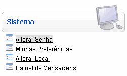
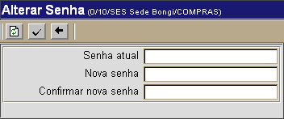

Alterar Senha de Acesso ao Sistema [ Voltar ]Para alterar sua senha de acesso ao sistema, o usuário deve abrir com um clique o formulário "Alterar senha", que encontra-se dentro do menu "Sistema". 
Ao clicar no formulário, a seguinte tela será aberta: 
1° Passo: preencha as informações da senha atual e nova senha de usuário. No campo "Confirmar nova senha", repita a nova senha de usuário. 2°
Passo: clique no botão |
 para
efetuar a troca de senha.
para
efetuar a troca de senha.